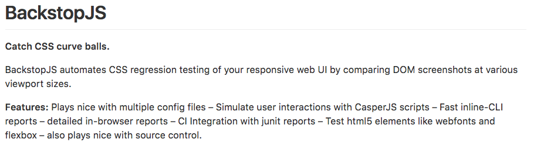

Open Source at Swissquote
Should we do it ?
Yes, this presentation is Open Source
Hypothetical lands
Quick Questions
- Who has already used an open source product ?
- Who has noticed a bug or wanted a feature in an open source product ?
- Who reported it ?
- Who contributed to fix/improve the product ?
We use tons of Open Source tools and products
Java
C
PHP
Jersey
Tomcat
Linux
openssl
Ubuntu
Docker
Chef
Puppet
Vagrant
Spring
Stripes
React
jQuery
Eclipse
Webpack
Gulp
postcss
sass
logstash
elasticsearch
grafana
mysql
postgresql
openFire
Rocket Chat
mongo db
+ many more
It's time to
give back!
But, we're not a technology company !
- Someone at Swissquote
And what do innovators, pioneers and game-changers do ?
They show it to others.
Other innovators, pioneers and game-changers
Netflix
AirBnb
Google
Facebook
Apple
Microsoft
Amazon
Walmart
General Electric
Ford Motors
Yahoo
Twitter
Adobe
IBM
SAP
Financial Times
Goldman Sachs
Okay, how do I do this open source thing?
- Someone in this room
Two possible approaches.
1. Contribute to existing projects
We didn't like how project-x worked, so we created sq-project-x
- Someone at Swissquote
project-x didn't fit exactly our needs, so we contributed the missing features
- Someone at Swissquote
Pro Tip
No existing solution fits exactly your needs
Cons
- Doing a proper open source contribution takes more time than just doing it for yourself.
Pros
- You had to do the work anyway.
- You are not the only maintainer of your solution.
- You put a smile on the product's maintainer's face.
- Your employees will be happy to work on things they can put on their resume.
Train people well enough so they can leave,
Treat them well enough so they don't want to.
- Richard Branson
BackstopJS
2. Open Source your own projects
- Github isn't Ali Baba's cave
- Sometimes you don't find what you need
If what you create has no business value
Open Source it !
Want some examples ?
- Sandbox 3
- SQUP
- SQ James
- Web Components Core
- Web Table Component
- Web Assets Library
- SQ Gulp
- SAP
Some older examples
These solutions were good at the time, but without the proper maintenance they became ... bad
- IPM
- SQ Metrics
False Assumptions
- Developers will work for me for free.
- We will have a thriving open source community.
- I will lose money by giving my technology away for free.
What you really win
- Attract Talent
- Cleaner code
- More varied work for developers
- Your developers can improve their portfolio
This page feels lonely

So, Should we do it ?
YES !
Next steps
- Convince our EM
- Convince the Legal department that there will be no legal issue with this.